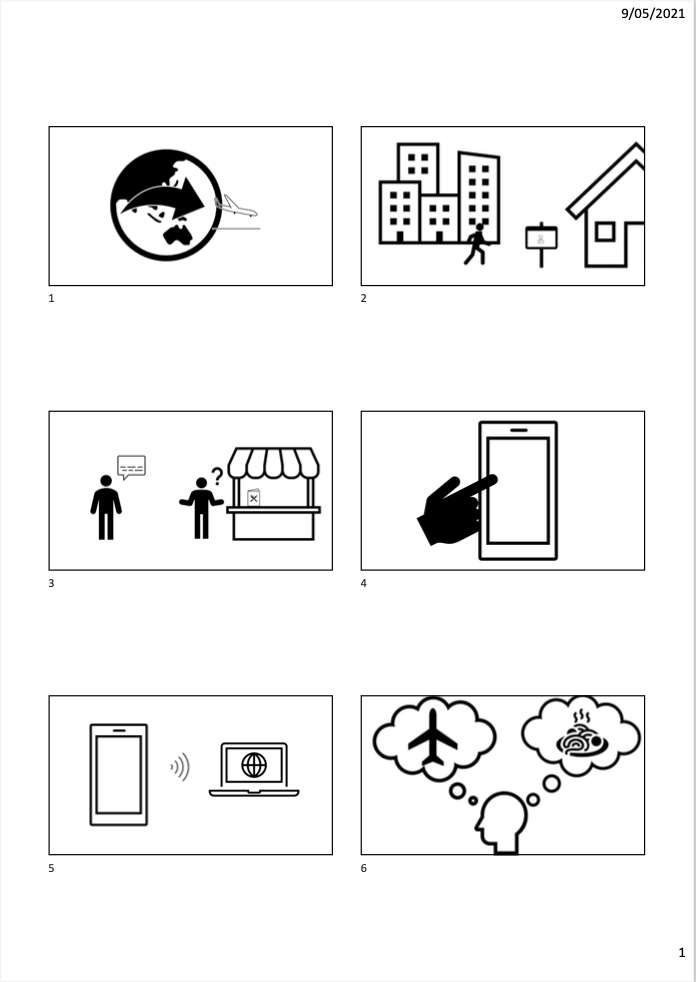
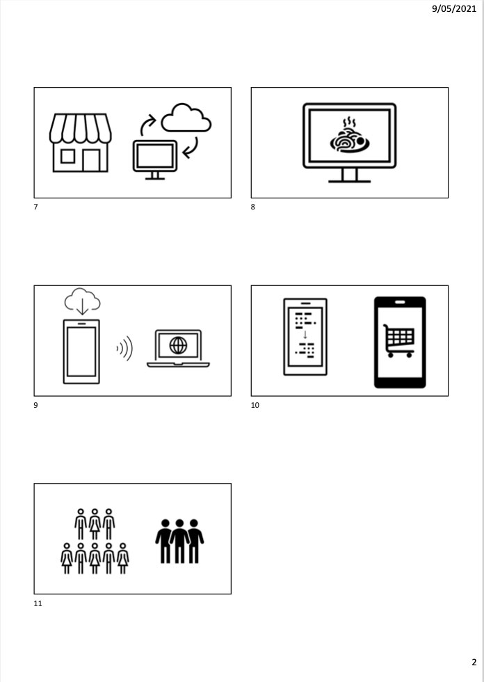

With today’s diverse and multicultural society, as well as ease of access to travel, language barriers can be one of the hardest things to overcome. This can be especially prevalent when trying to order or purchase something from a restaurant or other hospitality business in a foreign country. That’s why we have create UMI. UMI uses smart devices and NFC technology to help streamline the translation process and eliminate the need for cumbersome verbal interpretation.
We all have our reasons to travel, and we all share the same need to eat! We hope to break down the barriers and eliminate the sometimes nerve-wracking or anxiety inducing process of trying to purchase food in a foreign language. Wouldn’t you rather have a simple, easy way to communicate, rather than trying to play a bad game of charades or butchering the local language to the point of not being able to be understood. That is what UMI is all about. Here is how it works.
It starts by having businesses sign up for a UMI account. When a business signs up they will be taken to a merchant specific page for their place of business. From here, they can upload menu images and descriptions, view previous orders made through UMI, manage their billing details, and more.

Once a menu item has been uploaded, it will be automatically stored on our database, ready for a customer to come along and look at in their preferred language. All they would need from there is a small NFC device on their counter for their customers to tap their smart device on.
For a customer to then order from the business using UMI, they would download our UMI app from their devices app store and login/sign up for an account. Once they are signed in, they can select their preferred language to receive information in. Using this information, when they try to access the menu of a UMI enabled business, our server will retrieve the data, and automatically translate it into the desired language using a worldwide language database. All the customer will need to do is tap their devices to the business’ NFC device and voila, instantly translated menu.
We created this app with accessibility to the mainstream consumer experiences at its core, and to advocate for a shift in cultural relatability through the experience of food and dining. UMI aims to create and connect the ties between human experiences, both familiar and unfamiliar once again. So come check out UMI, and unlock an easy way to experience a diverse world of food and dining experiences.